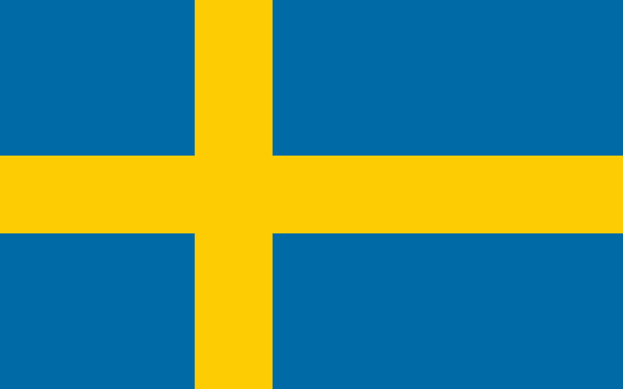

Für Schweden bleibt der belastbare Hauptbefund ein dokumentierter Negativbefund: Die Stockholmer Diplomatenliste vom 12. Februar 2026 nennt Botschaft, Konsularabteilung und Handelsvertretung – aber kein russisches Kulturzentrum. Belegt ist lediglich ein historisches „Kabinett für russische Sprache und Literatur“ in Göteborg, dessen Eröffnungsjahr sich nicht verifizieren ließ. Schweden ist damit vor allem ein Prüfstein für saubere Negativbefunde.
| Offizielles Zentrum | Nicht verifiziert. Die Stockholm Diplomatic List vom 12. Februar 2026 nennt für Russland Botschaft (Gjörwellsgatan 31), Konsularabteilung und Handelsvertretung (Ringvägen 1) – kein Kulturzentrum |
|---|---|
| Stärke des Befunds | Die Liste führt Kulturinstitute anderer Staaten ausdrücklich auf. Das stärkt den Negativbefund, beweist aber keine absolute Nichtexistenz |
| Betreiberlisten | Auch in den aktuellen Rossotrudnitschestwo-Listen ließ sich Schweden nicht verifizieren |
| Historischer Baustein | Ein „Kabinett für russische Sprache und Literatur“ in Göteborg, eröffnet gemeinsam mit der Stadtteilverwaltung Lundby und dem damaligen russischen Generalkonsulat |
| Datierung | Offen. Die Stiftungsseite nennt nur den Monat Oktober. Der interne Kontext deutet auf 2012 – weil weder Veröffentlichungsjahr noch Originalbeitrag sichtbar sind, wird das Jahr hier nicht als feststehend geführt |
| Vertragslage | Kein bilaterales Zentrumsabkommen gefunden |
| Maßnahmen | Ausweisung von fünf russischen Botschaftsangehörigen im April 2023 |
| Fehlertreffer | „Sweden House“ ist eine Immobilie in St. Petersburg mit schwedischer staatlicher Minderheitsbeteiligung – keine russische Kulturvertretung in Schweden |
Schweden ist der Kontrollfall dieser Sammlung. Das Fehlen eines Eintrags in einer aktuellen Diplomatenliste und das Nichtauffinden in Betreiberlisten rechtfertigen die Aussage „nicht gefunden“ – nicht „existiert nicht“. Und ein „Kabinett“ einer gelisteten Stiftung ist kein diplomatisches Kulturzentrum. Leseregel: „Offen“ bedeutet, dass eine Aussage in den geprüften öffentlichen Quellen nicht belegt ist. Das ist kein Beweis des Gegenteils. EU-Listung, nationaler Vollzug, politische Nichtkooperation, Vertragskündigung und tatsächliche Betriebsschließung werden getrennt bewertet.
Ein bilaterales Zentrumsabkommen wurde nicht gefunden. Damit fehlt in Schweden bereits die Rechtsgrundlage, die in anderen Staaten ein offizielles Haus überhaupt erst begründet.
Das Göteborger „Kabinett“ war eine Kooperation zwischen einer Stiftung, einer Stadtteilverwaltung und einem Generalkonsulat – kein völkerrechtlich abgestütztes Zentrum. Ein aktueller Betreiber, eine Adresse, physischer oder digitaler Betrieb sowie eine förmliche Auflösung wurden nicht gefunden.
Schweden hat die EU-Sanktionen umgesetzt und im April 2023 fünf russische Botschaftsangehörige ausgewiesen. Eine Zentrumsschließung oder eine zentrumsbezogene Vermögensmaßnahme wurde nicht gefunden – es gab kein Zentrum, gegen das sie sich hätte richten können.
Offen bleibt, ob nach der EU-Listung der Stiftung Russkiy Mir kommunale Bücher, Technik oder Räume eingefroren, zurückgegeben oder aus dem Programm genommen wurden.
Schweden ist vor allem ein Kontrollfall gegen Überbehauptung. Wer aus einem fehlenden Eintrag auf Nichtexistenz schließt, überdehnt seine Quellen – wer die dokumentierte Negativsuche verschweigt, unterschlägt einen belastbaren Befund. Beide Fehler sind vermeidbar.
Das historische Kleinstprojekt in Göteborg zeigt zudem eine Kategoriengrenze: Ein „Kabinett“ einer gelisteten Stiftung ist kein diplomatisches Kulturzentrum. Die Verwechslung beider Ebenen erzeugt Zahlen, die einer Prüfung nicht standhalten.
Für Deutschland folgt daraus eine Reihenfolge: Jede behauptete Schließung sollte erst nach Abgleich von Diplomatenliste, Vereins- und Unternehmensregister, Grundstückseigentum und Fördervertrag formuliert werden.
Wo sich das Einzeldokument eindeutig belegen ließ, verweist der Link unmittelbar darauf – etwa auf Gesetzblätter, Vertragsveröffentlichungen und Parlamentsdokumente. Die Ausgangsakte dokumentiert für die übrigen Belege nur Herausgeber, Titel und Datum, nicht die vollständige Dokumentadresse; dort führt der Link auf die belegte Quelldomain. Diese Tiefenlinks sind ausdrücklich offen und werden nachgetragen, sobald die Fundstelle eindeutig ist.